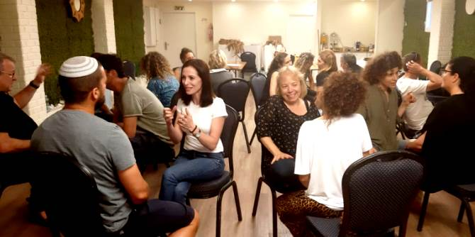

A three-day retreat conducted at the end of the two-year Mandel Program for Regional Leadership in Eilat-Eilot brought together strands of content and process that ran throughout the program from beginning to end. During the course of the retreat, the fellows processed past events and their current situation, and looked toward the future.
The retreat began at the Eretz Israel Museum in Tel Aviv, where the fellows toured the museum’s exhibition, “The Levant as a Parable: Jacqueline Kahanoff,” guided by Dr. Ketzia Alon. Over the two years of the program, the fellows had read and closely studied texts by Kahanoff, and the exhibition served as a summary that pulled together her ideas about Israeli space as a fertile Levant that is home to unique and fruitful inter-cultural encounters and creativity.
The rest of the retreat was held at Kibbutz Nahsholim, and comprised sessions that enabled the fellows to summarize and process their learning on a personal, inter-personal, and group level, while connecting it to the different leadership philosophies that they studied during the program. A variety of pedagogies were used, including voice and movement, weaving, and writing. There was also a discussion of the Book of Ruth and the Shavuot festival.
At the final workshop, led by Dr. Adi Nir Sagi, the director of the Mandel Center for Leadership in the Negev, the fellows focused on the issue of leadership that creates reality and examined their learning processes, from both an individual and group perspective, as the basis for future action that will bring change to the region in the fields that they had chosen as their focus: education, tourism, community, and culture.
The retreat provided three moving days of shared reflection and feedback, before the fellows returned to their professional settings, well equipped to work to make a real difference.

{kind=link}